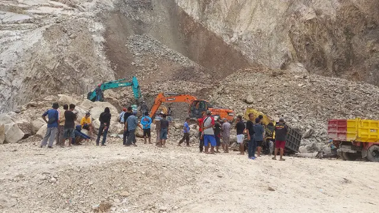
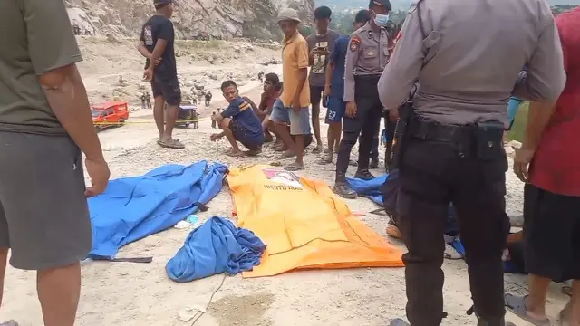
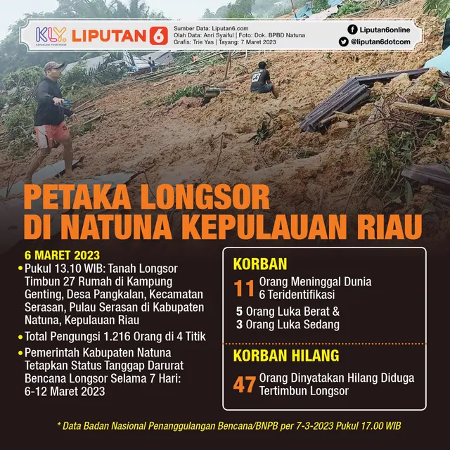

Korban Tewas Longsor Gunung Batu Cirebon Bertambah Jadi 19 Orang, 6 Masih dalam Pencarian

Suasana longsor di kawasan tambang batu alam Gunung Kuda Kabupaten Cirebon menewaskan puluhan pekerja hingga menimbun alat berat.
Tim gabungan dari TNI, Polri, Basarnas, BPBD, dan relawan berhasil mengevakuasi 19 jenazah korban longsor di area tambang Gunung Kuda, Cirebon, Jawa Barat.
Proses evakuasi dan pencarian dimulai sejak pukul 07.00 WIB berdasarkan asesmen kondisi lapangan. Awalnya, pencarian dibagi ke dua titik, yakni worksheet A (barat) dan worksheet B (timur), namun akhirnya difokuskan di worksheet A. Hingga Minggu (1/6/2025), total 19 korban ditemukan dalam kondisi meninggal dunia.
Menurutnya, aktivitas pencarian dilakukan dengan kombinasi alat berat dan upaya manual oleh personel gabungan. Ia menyampaikan dalam proses tersebut, terdapat dua jenazah korban yang berhasil dievakuasi setelah tertimbun material longsor sejak Jumat (30/5).
Namun pada pukul 13.00 WIB, kata Hista, proses evakuasi dihentikan sementara akibat adanya longsor susulan yang terjadi beberapa kali di sektor timur.
"Kami memutuskan menghentikan sementara kegiatan di lapangan sambil menunggu asesmen lanjutan serta kedatangan alat pemantau tanah untuk memonitor potensi longsor susulan," ujarnya.
Total Korban

Petugas BPBD, Polisi, TNI hingga warga dan pekerja masih terus bahu membahu melakukan evakuasi serta pencarian terhadap korban pekerja yang tewas tertimbun reruntuhan longsor tambang batu alam Gunung Kuda Cirebon.
Dia menuturkan dengan hasil evakuasi hari ini, membuat total korban tewas yang sudah dievakuasi menjadi 19 orang. Berdasarkan data, lanjutnya, mayoritas korban merupakan buruh atau kuli yang ikut dalam aktivitas penambangan di kawasan Gunung Kuda. Hista berharap seluruh korban yang saat ini masih dinyatakan hilang atau tertimbun material longsor, dapat ditemukan secepat mungkin.
"Kami akan memaksimalkan pencarian setelah alat pemantau tiba. Mudah-mudahan enam korban yang belum ditemukan bisa segera kami evakuasi dalam waktu dekat," katanya. Berdasarkan data dari BPBD Jabar, berikut adalah daftar 19 korban meninggal yang telah berhasil diidentifikasi:
- Andri (41), Kuningan.
- Sukadi (48), Astanajapura, Cirebon.
- Sanuri (47), Palimanan, Cirebon.
- Sukendra, Dukupuntang, Cirebon.
- Dendi Hirmawan (40), Bandung.
- Sarwah (36), Sumber, Cirebon.
- Rusjaya (48), Palimanan, Cirebon.
- Rion Firmansyah, Palimanan, Cirebon.
- Rino Ahmadi (28), Dukupuntang, Cirebon.
- Ikad Budiarso (47), Ciwaringin, Cirebon.
- Toni (46), Palimanan, Cirebon.
- Wastoni Hamzah (25), Indramayu.
- Jamaludin (49), Indramayu.
- Suparta (42), Palimanan, Cirebon.
- Sakira Bin Jumair (44), Gempol, Cirebon.
- Sunadi (30), Dukupuntang, Cirebon.
- Sanadi Bin Darya (47), Gempol, Cirebon.
- Nalo Sanjaya (53), Dukupuntang, Cirebon.
- Wahyu Galih (26), Cipanas, Cirebon.
6 Korban dalam Pencarian
Adapun enam korban yang masih dalam pencarian antara lain:- Muniah (45), Cikeduk, Cirebon.
- Sudiono (51), Dukupuntang, Cirebon.
- Tono Bin Sudirman (57), Dukupuntang, Cirebon.
- Dedi Setiadi (47), Dukupuntang, Cirebon.
- Nurakman (51), Dukupuntang, Cirebon.
- Puji Siswanto (50), Majalengka.

Infografis Petaka Longsor di Natuna Kepulauan Riau. (Liputan6.com/Trieyasni)